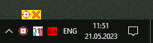

CaptureText
Назначение
Захватывает текст с элементов окна. Кликнуть в трее, появится панелька, тянуть курсор с панельки на элемент окна.

Взаимосвязанные
CaptureText
Использование
1. Кликнуть иконку в трее. Появится окно небольшое возле иконки в трее, размером 32х32.
2. Нажать кнопку в виде прицела и не отпуская перетаскивать к элементу, текст которого необходимо захватить. При этом в подсказке отображается текст. Подсказка смещается в противоположную область экрана, чтобы не мешать захвату.
3. При отпуске мыши текст под курсором отправляется в буфер обмена. Всё.
Кнопка крестик в окне скрывает его, а выход из программы в меню по правой кнопкой мыши на иконке в трее.
Эта программа с использованием PureBasic, ранее была написана мной на AutoIt3.
Функционал отличается. Во первых в AutoIt3 используется другая функция захвата и она не извлекает индивидуальные элементы списков, но есть другое преимущество - извлекает целиком дерево, список, меню и т.д. Поэтому обе программы дополняют друг друга разными функционалами. Важно в AutoIt3 варианте если ОС x64, то используйте программу также x64, иначе не будет захватывать списки.